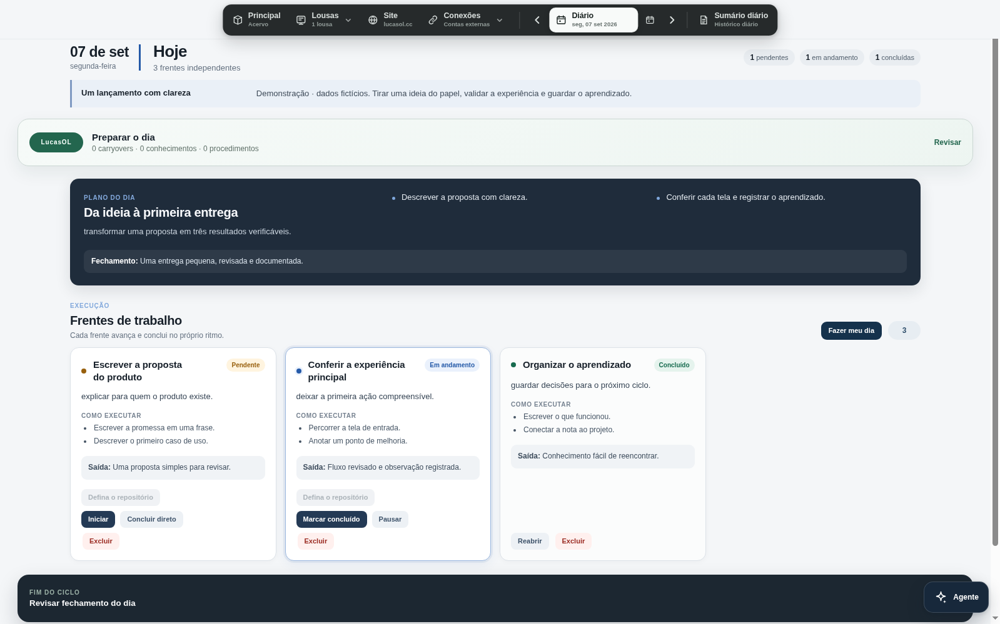
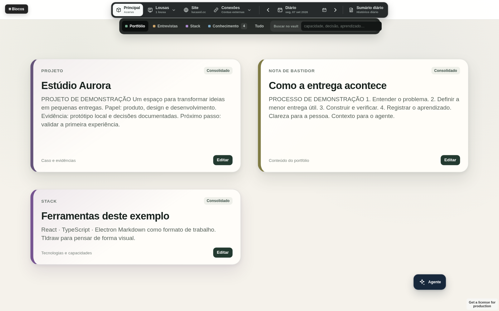
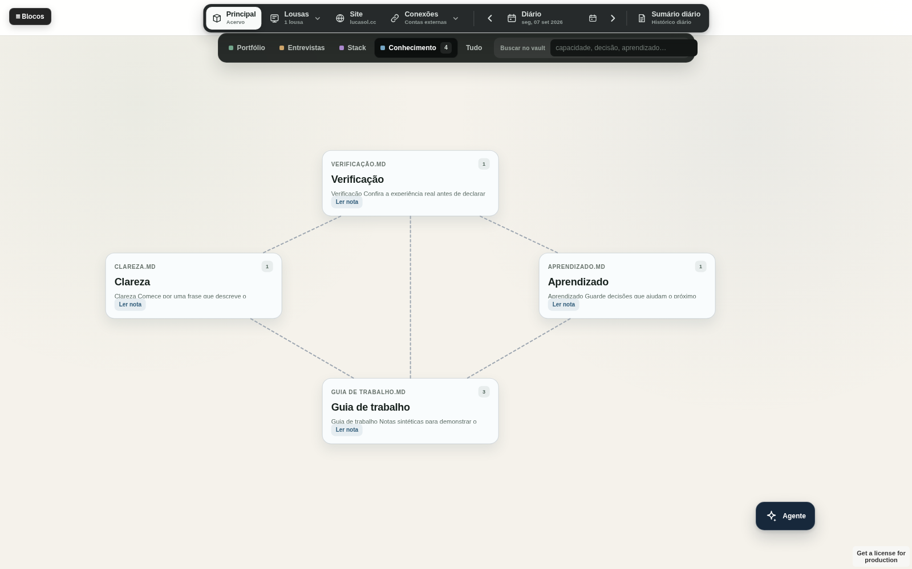
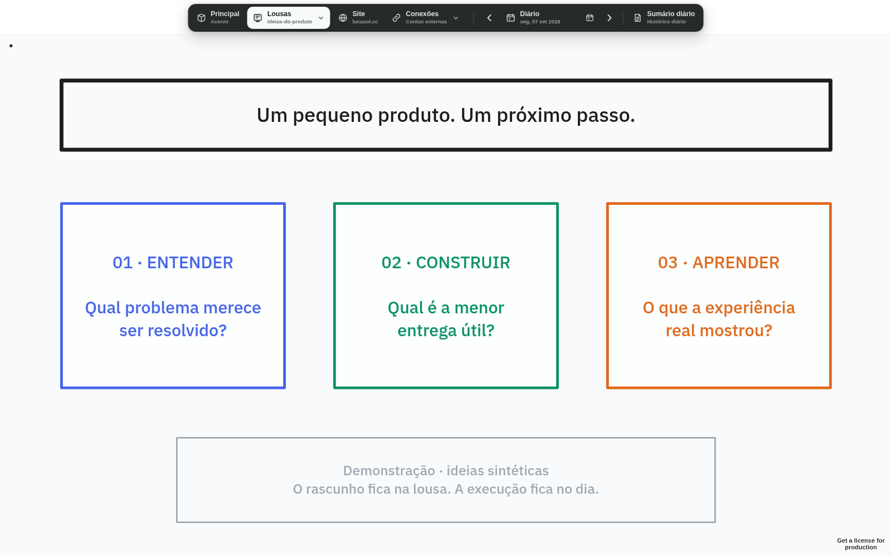
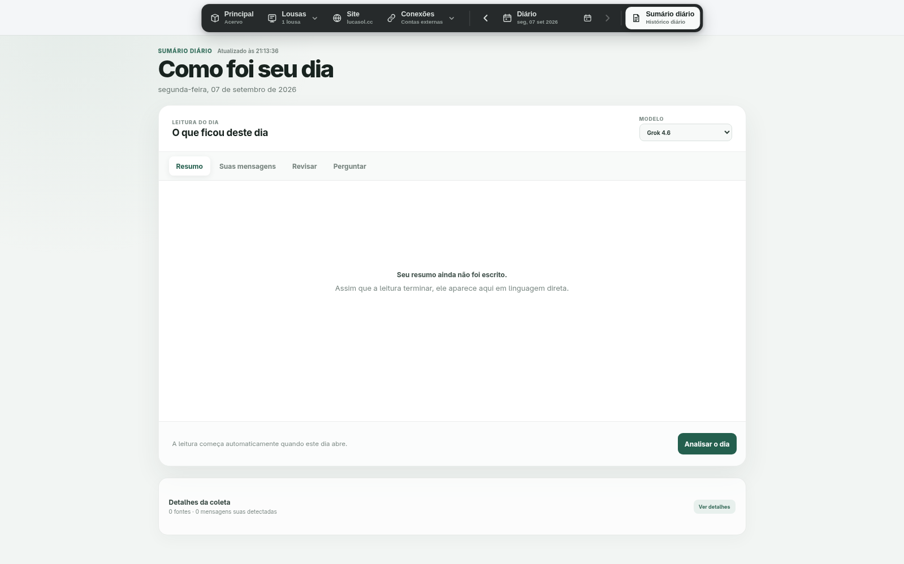
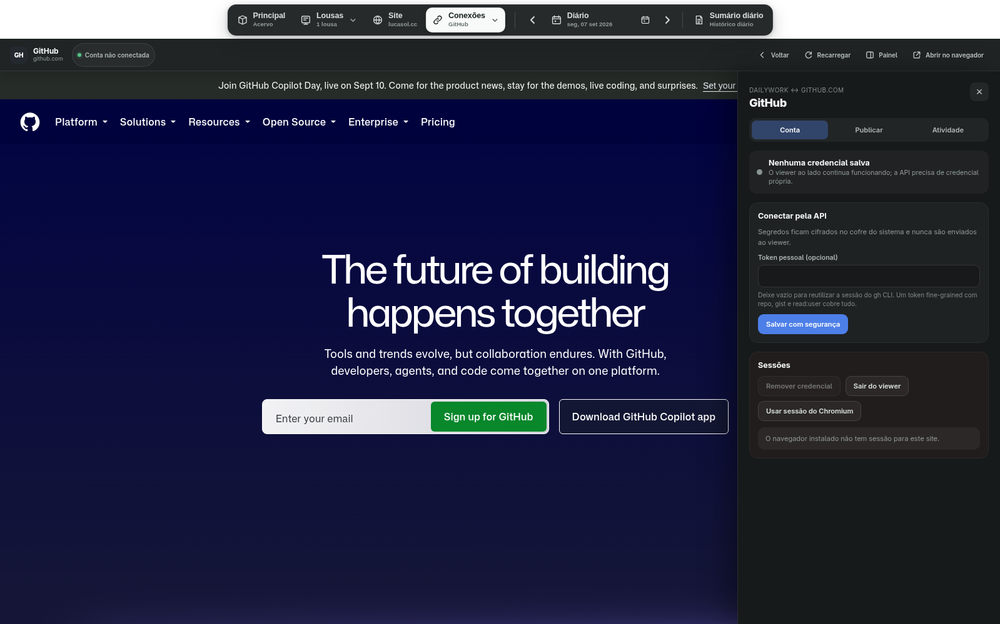
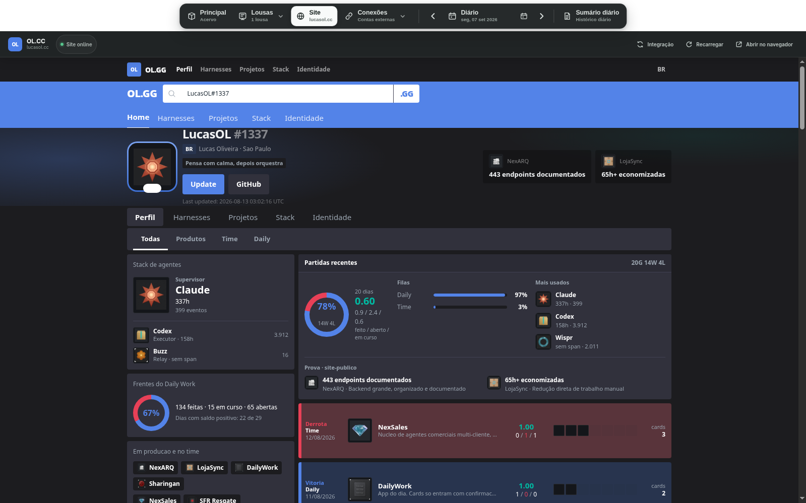

Saiba o que vem agora.
Objetivo, ações e critério de pronto acompanham cada frente. O plano mantém o conjunto compreensível.
Planeje o dia, avance cada frente e guarde o que aprendeu. Um espaço de trabalho em que pessoas e agentes conseguem continuar de onde você parou.
Um guia narrado para organizar o primeiro dia, trabalhar com o Agente, explorar o acervo e as Lousas, configurar conexões e revisar os resultados.
Objetivo, ações e critério de pronto acompanham cada frente. O plano mantém o conjunto compreensível.
O trabalho pertence a uma data. O conhecimento durável vive no Principal, pronto para orientar outro ciclo.
A pessoa lê o Resumo. O agente opera arquivos e APIs. As alterações passam pela mesma camada de persistência.
Separe o trabalho em entregas que fazem sentido. Cada uma pode avançar no seu próprio ritmo.
Registre a direção e o plano da data.
Dê a cada entrega um objetivo, ações e saída.
Inicie, pause ou conclua cada frente.
Revise o fechamento e retome as notas úteis.
Capturas da versão 0.6.0. Abra qualquer imagem para ver os detalhes em tamanho completo.
O Resumo reúne plano, frentes e progresso. Pendente, em andamento e concluído deixam claro onde cada entrega está.
No vídeo, a proposta muda de estado e o novo valor é conferido no arquivo Markdown.

Projetos, provas e capacidades ficam em um canvas próprio. O material durável mantém seu lugar entre uma entrega e outra.
Estúdio Aurora é um projeto fictício usado exclusivamente para esta demonstração.

O mapa lê as notas da pasta de conhecimento. Pesquise, abra uma nota e siga suas relações mantendo a fonte canônica.
Quatro arquivos locais e seus links formam o mapa apresentado.

Use o canvas livre para explorar, desenhar e organizar um rascunho. Cada lousa tem seu próprio arquivo de sessão.
O exemplo foi salvo como snapshot nativo do tldraw e carregado pelo app.

Com fontes e modelo configurados, o Sumário oferece leitura, mensagens humanas, estudo e conversa sobre uma data.
A captura mostra o estado inicial, sem fontes pessoais conectadas e sem análise gerada.

GitHub, LinkedIn, X e Reddit têm espaços próprios. Publicações pela API passam por preparação, revisão e confirmação.
A instância da gravação não possui credenciais nem sessão importada.

O site aparece dentro de uma superfície isolada. A integração local reúne estado, versão publicada e preparação de atualização.
Captura do site público existente em 7 de setembro de 2026. A aparência pode mudar.

Verificação em 07/09/2026: captura do Electron, releitura por IPC e persistência em arquivo. Estes números descrevem a demonstração, não um benchmark de produtividade.
| Projeto | Use para | Foco |
|---|---|---|
| DailyWork | Planejar, executar e registrar o dia | Trabalho diário e conhecimento |
| OL.GG ↗ | Revisar o conjunto de projetos | Projetos, atividade e contexto do trabalho |
| LucasOL ↗ | Apresentar perfil e projetos publicamente | Presença profissional pública |
Papéis conferidos nos READMEs dos três projetos em 07/09/2026. Fontes e método ↓
O DailyWork é um app Electron com scripts de instalação para Linux e Windows. Quem já possui acesso ao repositório pode instalar as dependências e abrir a aplicação.
O projeto está em desenvolvimento. Esta vitrine não oferece instalador público. Recursos de IA e contas externas dependem da configuração local.# Instale as dependências
npm install
# Gere a build e abra o app
npm run appFonte de funcionalidades: README.md, AGENTS.md, CONTEXT.md e package.json do DailyWork 0.6.0; README.md do OL.GG; README.md do LucasOL site. Documentação consultada em 7 de setembro de 2026. O comparativo descreve o papel de cada projeto e não declara superioridade.
Mídias capturadas no app Electron construído das fontes atuais, em uma bancada gráfica isolada. Projeto, tarefas, notas e lousa da demonstração são sintéticos. O site incorporado é público. Nenhum resultado de IA, conta conectada ou publicação foi simulado. A narração é gerada com OmniVoice local.
A transição de pendente para em andamento e concluído foi realizada pelos controles reais e conferida por IPC e Markdown. As imagens podem ser abertas em tamanho completo. O Sumário sem conteúdo representa o perfil de demonstração sem fontes pessoais.
{kind=link}
{kind=link}
{kind=link}
{kind=link}
{kind=link}
{kind=link}
{kind=link}